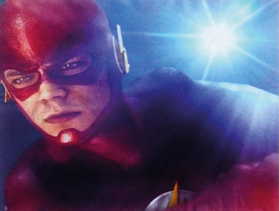
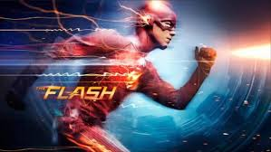

O FLASH SUMIU: DESAPARECIDO DURANTE CRISE
Publicado em 25 de abril de 2024
Resumo da Notícia
Depois de uma batalha intensa contra o Flash Reverso, a cidade entra em pânico com o desaparecimento do nosso Velocista Escarlate em uma explosão de luz. A causa do confronto ainda é desconhecida. De acordo com testemunhas, O Flash iniciou sua luta contra o Flash Reverso durante a última meia-noite, com o apoio dos heróis de Starling City, Arqueiro Verde, Átomo e Mulher-Gavião. Os céus assumiram um denso tom de cor carmesim enquanto a batalha causou a maior destruição que nossa cidade já viu desde que o Flash apareceu pela primeira vez em Central City.
Vários caminhões foram pegos na bagunça, derramando seu conteúdo nas ruas. Quedas de energia varreram quase 20 quarteirões da cidade, entre a 16ª Rua e a Avenida Adams. Cinco destes quarteirões ainda permanecem sem energia. Todos os edifícios da área foram evacuados pelo Departamento de Polícia de Central City, com a ajuda do Átomo.
De acordo com relatos, enquanto o Flash e o Flash Reverso lutavam entre si no meio de dois caminhões-tanques tombados, os relâmpagos de energia que saiam dos velocistas ameaçavam incendiar o óleo vazado de um dos caminhões.
A fumaça dos motores dos caminhões dificultava a visibilidade do confronto, mas parece que em algum momento os velocistas tiveram uma discussão acalorada antes de continuar a luta. E então, de repente, o Flash começou a perseguir o Flash Reverso e os dois desapareceram, deixando o Átomo, o Arqueiro Verde e a Mulher-Gavião para trás.
Uma testemunha ocular que assistiu à batalha de seu apartamento antes de ser evacuada disse: “Estava difícil de ver, mas o Flash e o Flash Reverso estavam subindo e descendo a Avenida Monroe, aí teve um monte de raios e, então, nada! Foi bem estranho.”
Outras testemunhas descreveram um fenômeno semelhante: uma luz ofuscante, seguida de escuridão enquanto Outras testemunhas descreveram um fenômeno semelhante: uma luz ofuscante, seguida de escuridão enquanto o céu voltava a ficar preto. E quando o alvoroço se acalmou, percebemos em um breve momento que o Flash e o Flash Reverso sumiram sem deixar rastros.
O chefe de polícia de Central City, Joe West, deu uma entrevista nas primeiras horas desta manhã, afirmando: “Não temos muitos detalhes agora. O que sabemos nesta noite é que o maior protetor de Central City desapareceu num piscar de olhos. Esperamos apenas que ele retorne tão rápido quanto.” Um sentimento partilhado por todos que chamam esta grande cidade de lar.
Imagem Relacionada
Imagens da 1ª Temporada de The Flash
Flash sendo ESPANCADO em sua própria série
Assista ao vídeo relacionado ao tema da notícia para mais detalhes.